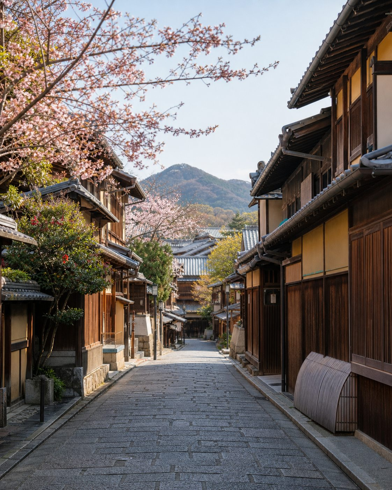
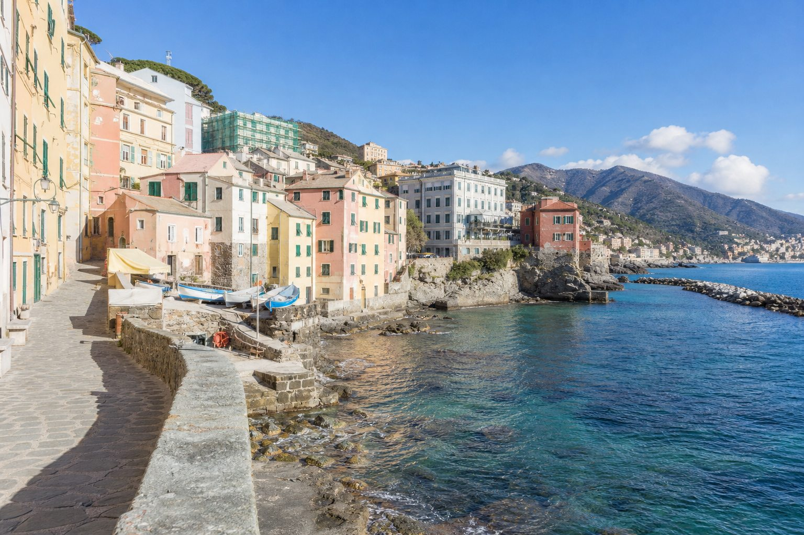

DestinationsA First-Time Visitor’s Guide to Kyoto, Japan
A calm, practical introduction to Kyoto’s temples, neighborhoods, transport and seasonal rhythms.
Fresh destinations stories and practical ideas from Tripnoria.

A varied shortlist of historic capitals, compact cultural hubs and waterside cities for future European journeys.
Read the story →
DestinationsA calm, practical introduction to Kyoto’s temples, neighborhoods, transport and seasonal rhythms.
 Destinations
DestinationsDiscover historic northern cities, Atlantic beaches, wine country and smaller Portuguese communities.

DestinationsSeven Italian seaside towns with memorable scenery, walkable centers and distinct regional character.
 Destinations
DestinationsAn easy first look at Vancouver’s waterfront, neighborhoods, food and access to nearby nature.
 Destinations
DestinationsHow to experience Edinburgh’s dramatic streets, historic sights and lively cultural character.
 Destinations
DestinationsA compact country of alpine lakes, green cities, caves and an inviting Adriatic edge.